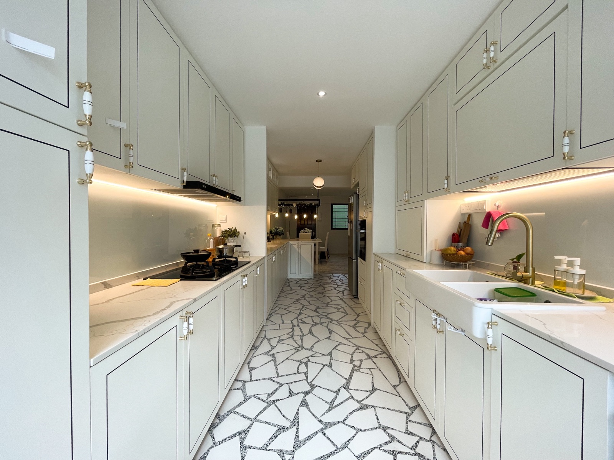
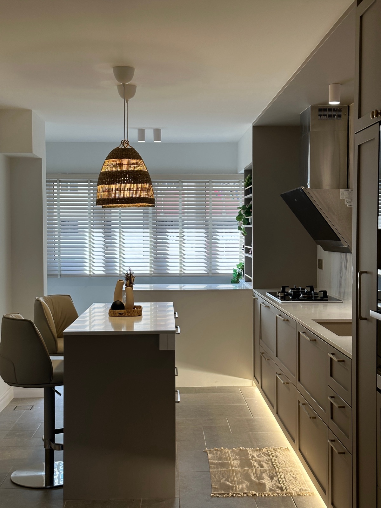
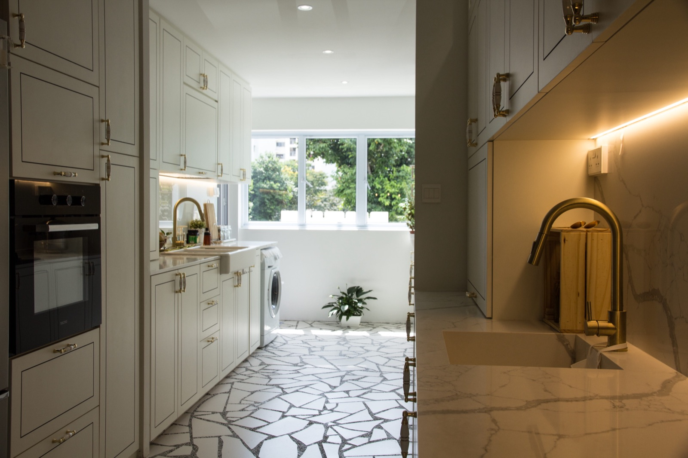

Key Takeaways
A well-planned 5-room BTO interior design offers flexibility, but requires intentional planning to avoid underused space
Open-concept layouts can enhance spaciousness, but should be balanced with privacy needs.
Multi-functional rooms help future-proof your home for work, guests, or family use
Smart storage planning keeps larger homes organised without visual clutter.
Practical renovation decisions ensure your design remains liveable and cost-efficient over time.
Understanding the Potential of a 5 Room BTO Interior Design
Designing a larger HDB flat involves a different set of considerations than smaller units. A 5-room BTO interior design offers more space to work with, but that also means more decisions around layout, flow, and functionality. In Singapore, where many households juggle work-from-home needs, family routines, and long-term planning, this added space needs to be used with purpose.
Without proper 5-room BTO space planning, larger flats can feel fragmented or underutilised. Instead of simply filling rooms, the goal should be to create a layout that supports your daily life. This involves thinking beyond fixed functions and considering how each space can adapt over time, whether for work, rest, or hosting.
Why a 5 Room BTO Needs a Different Design Approach
A 5-room BTO offers more floor area, but that extra space can quickly feel disjointed without a clear design direction. Unlike smaller flats where layouts are more straightforward, larger units require careful coordination between rooms to maintain a sense of flow and cohesion.
In many cases, homeowners tend to treat each room as a separate function, which can lead to spaces that feel isolated or underused. A more effective approach is to plan the home as a whole, ensuring that each area connects logically while still serving its purpose. This allows the layout to feel intentional, making it easier to move between spaces and adapt them for different needs over time.

Creating an Open Yet Functional Living Space
An open-concept 5-room BTO layout is a popular approach to making the most of a larger floor area. By reducing unnecessary partitions, the living, dining, and even kitchen areas can feel more connected, allowing natural light to flow more freely throughout the home. This creates a sense of openness that makes the space feel larger and more inviting.
However, openness should not come at the expense of structure. Subtle zoning techniques such as furniture placement, layered lighting, or partial partitions can help define distinct areas without completely closing them off. This balance ensures that the home remains visually open while still being practical for daily use, whether you are relaxing, working, or entertaining guests.
Designing Flexible Rooms for Modern Lifestyles
One of the biggest advantages of a 5-room flat is the ability to create flexible, multi-purpose spaces. Instead of assigning a fixed function to every room, homeowners can design areas that evolve with their needs. A spare bedroom, for example, can double as a home office or study, while an extended living area can be adapted into a guest space when required.
This approach is especially relevant in 5-room BTO renovation projects, where lifestyle needs can change over time. Designing with flexibility in mind allows you to avoid major reworks in the future. Keeping layouts adaptable, using modular furniture, and avoiding overly specialised built-ins can make it easier to adjust the space as your household grows or routines shift.
Planning a Practical Kitchen and Smart Storage

The kitchen often serves as a key functional zone in any home, and in a larger flat, it plays an even more central role. Whether you opt for an open or enclosed layout, the focus should be on creating a workflow that supports daily use. Sufficient counter space, durable materials, and well-organised storage are essential to ensure the kitchen remains efficient and easy to maintain.
Beyond the kitchen, storage planning is equally important in a 5-room BTO interior design. While more space is available, clutter can accumulate quickly without proper solutions. Built-in cabinetry, full-height storage, and concealed compartments can help keep the home organised without making it feel heavy. At the same time, leaving certain areas open prevents the space from feeling overcrowded and maintains a clean, balanced look.
Balancing Lifestyle Needs with Renovation Budget
A well-designed home should not only look good but also be practical to build and maintain. During a 5-room BTO renovation, it is important to prioritise features that add real value to daily living. This could include investing in better lighting, functional layouts, or quality materials in high-use areas such as the kitchen and living room.
At the same time, avoiding over-renovation is key. For instance, opting for a high-quality, modular storage system instead of a fixed, custom-built wardrobe in a spare room can reduce immediate costs and retain the space’s long-term versatility. Not every wall needs to be altered, and not every space requires custom-built features. Keeping the design simple and adaptable helps manage costs while ensuring the home remains flexible in the long run. Thoughtful planning at the start can reduce the need for future modifications and make the renovation more sustainable overall.
Working with an Interior Designer for Your 5 Room BTO
Planning a larger home involves more than just choosing finishes or furniture. A 5-room BTO renovation requires careful coordination across layout planning, technical works, and day-to-day functionality. Working with an interior designer helps bring structure to this process, ensuring that each decision supports both the overall design and the home's intended use.
An experienced designer can identify opportunities that may not be immediately obvious, such as improving flow between spaces, optimising storage without overcrowding, or introducing flexible layouts that adapt over time. They also help balance aesthetics with practicality, making sure design ideas can be executed within budget and built to last.
Beyond design, interior designers manage timelines, liaise with contractors, and oversee site work, which reduces the risk of delays or costly mistakes. This level of coordination is especially valuable for larger flats, where multiple elements need to come together seamlessly. By working with a professional, homeowners can navigate the renovation process with greater clarity, efficiency, and confidence.
Bringing It All Together with the Right Design Partner
A successful 5-room BTO interior design brings together space, style, and function in a way that supports everyday living. From open layouts and flexible rooms to practical storage and cost-conscious planning, each design decision should work towards creating a home that feels both comfortable and efficient.
At M2 Decor, we focus on delivering well-planned, functional interiors tailored to how homeowners in Singapore live. Our approach combines strong space planning with practical design solutions, ensuring each home is not only visually cohesive but also easy to use and maintain.
If you are planning your 5-room BTO renovation, reach out to us to explore how we can help you create a space that works for your lifestyle.